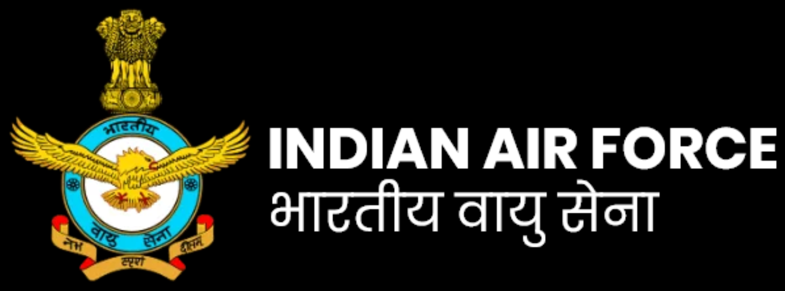
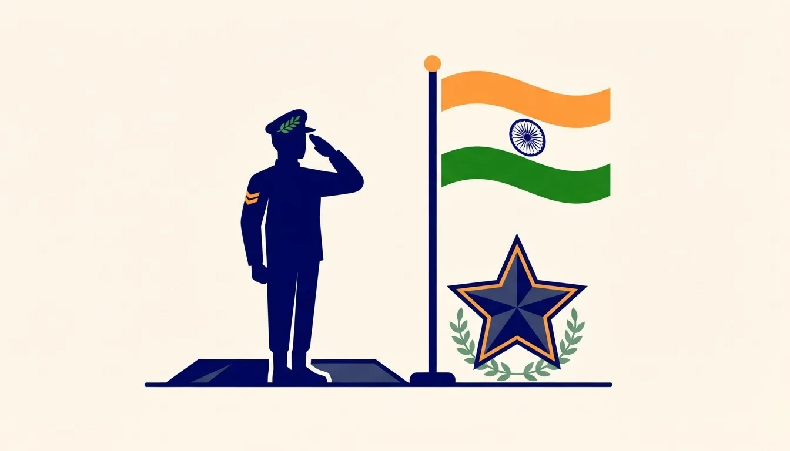
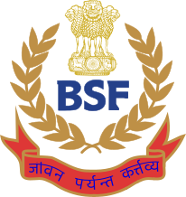

Sector guide
Defence jobs: who can apply, and how selection works
Defence recruitment explained in diagrams: which qualification unlocks which post, every selection stage, and live listings pulled from the official feed.
Not a recruiting authority. Confirm every date, fee and eligibility clause on the official notice linked from each listing.

Who can apply: qualification → post
Filter by qualification or search for a post. Confirm exact age, subject and certificate rules in the linked notice.
9 role paths
No matching posts. Try a broader search or choose all qualifications.
10th Pass
- Agniveer (Army, Navy, Air Force)Level 1-34-year service, 25% retained
- Constable / Rifleman / SepoyLevel 3SSC GD, CAPF, State Police
- Tradesman MateLevel 1Support roles, workshop, stores
10th pass + physical standards. Age 17.5–21 (Agniveer). Physical: running, push-ups, pull-ups.
12th Pass
- NDA (National Defence Academy)OfficerGraduate + military training, 3-year
- CDS (Combined Defence Services)OfficerGraduate entry, IMA/OTA/INA/AFA
- AFCAT (Air Force Common Admission)OfficerFlying, Ground Duty (Tech/Non-Tech)
12th pass with Physics & Maths for NDA/AFCAT (Flying). Age 16.5–19.5 for NDA.
Graduate
- Indian Army Officer (SSB)OfficerCDS, TGC, SSC (Tech/Non-Tech)
- Indian Navy OfficerOfficerCDS, INET, SSC
- Indian Air Force OfficerOfficerAFCAT, NCC Special Entry
Any degree. SSB interview (5 days). Age 19–25. Height: 157cm (men), 152cm (women).
How selection works, stage by stage
Open a stage for what it checks. The exact order and tests can vary by notification.
-
Written Exam
NDA: Maths + GAT (300 marks). CDS: English, GK, Maths. AFCAT: 100 Qs, 2 hrs.
Qualifying. Negative marking 1/3. Cut-off varies by academy.
-
SSB Interview (5 days)
Stage 1: OIR + PPDT. Stage 2: Psychology, GTO, Personal Interview, Conference.
Only Stage 1 clearers proceed. 5-day process. No coaching substitute for genuine personality.
-
Medical Examination
Full body check: eyes, ears, heart, BMI, chest, joints, dental, blood tests.
Strict standards. Colour blindness disqualifies Flying. BMI 18.5–25.
-
Merit List & Joining
All-India merit based on written + SSB. Medical fitness mandatory.
Final allotment by academy capacity. Training 1.5–3 years depending on entry.
Defence listings tracked right now
42 listings matched to this sector. Open a detail page to check its source link and current notice.
-
 Result / recruitment update
SSB Head Constable Ministerial 2020 Result / Marks 2026
Closes 22 August 2021
Result / recruitment update
SSB Head Constable Ministerial 2020 Result / Marks 2026
Closes 22 August 2021
-

Admit card BSF HC Ministerial, ASI Steno 2024 Admit Card Closes 8 July 2024 -
 Admit card
CISF Constable / Fire Exam Date 2026
Closes 30 September 2024
Admit card
CISF Constable / Fire Exam Date 2026
Closes 30 September 2024
-
Admit card
CISF Constable Tradesman 2024 Exam City Details
Closes 3 April 2025
- Admit card BSF Constable Tradesman 2025 CBT Exam Admit Card Closes 23 August 2025
-
 Result / recruitment update
UPSC CDS I 2026 Final Result
Closes 30 December 2025
Result / recruitment update
UPSC CDS I 2026 Final Result
Closes 30 December 2025
-
Result / recruitment update
UPSC NDA I Exam 2026 Marks
Closes 30 December 2025
- Admit card DRDO CEPTAM 11 | Tier II Admit Card 2026 Closes 11 January 2026
Application checklistApply in five steps Open checklist
Use the recruiting authority’s instructions as the final word. Many portals stop allowing edits after fee payment.
Read the official notice
Confirm qualification, age as on the notice's cut-off date, fee and the last date before you register.
Register on the official portal
Use the link on the notice, not a search result. Keep the registration number and password it gives you.
Fill the form, upload photo and signature
Enter your name exactly as on your Class 10 certificate. Upload the photo and signature in the size and format the portal specifies.
Pay the fee
Pay online and save the receipt. If you claim a fee waiver, the category certificate must already be in the prescribed format.
Download the confirmation
Save the submitted application PDF and the payment receipt. Check the portal again after a day to confirm the form was accepted.
Optional detail
More sector guidance
Open only the section you need; keep the main route short and easy to scan.
Documents to keep ready
Check the official notice for exact formats, dimensions, validity dates and category-specific requirements.
- Passport photograph
Recent, plain light background, within the portal's file-size limit.
- Signature
Signed in black ink on white paper, scanned at the size the portal asks for.
- Class 10 certificate
Proves your date of birth and is the usual minimum qualification.
- Degree or marksheet
Final or provisional, whichever the notice says it accepts.
- Caste or EWS certificate
In the prescribed format from the competent authority, valid on the cut-off date.
- Domicile or residence proof
Needed only where the notice reserves posts for a state or region.
- Photo ID
Aadhaar, PAN, passport or voter card — the name must match the application.
- Fee payment proof
UPI or bank receipt, kept until the admit card is issued.
Syllabus and preparation
Use official syllabus links where available; verify the current pattern on the recruiting authority’s site.
NDA — UPSC written
Mathematics 120 questions / 300 marks, 2.5 hours. General Ability Test 150 questions / 600 marks, 2.5 hours. Negative 1/3. SSB interview of 900 marks follows the written test.
- Mathematics — Sets and functions, quadratic equations, matrices and determinants, trigonometry, analytical geometry (2D and 3D), differential and integral calculus, vectors, statistics and probability
- GAT — English — Grammar and usage, vocabulary, synonyms and antonyms, comprehension, cloze, sentence ordering
- GAT — General Knowledge — Physics, chemistry and general science at Class 9–10 level, history and freedom struggle, geography, current events
CDS — UPSC written
English 120 questions / 100 marks, 2 hours. General Knowledge 120 questions / 100 marks, 2 hours. Elementary Mathematics 100 questions / 100 marks, 2 hours. Negative 1/3.
- English — Comprehension, error spotting, sentence improvement, ordering of words and sentences, fill in the blanks, antonyms and synonyms
- General Knowledge — Current affairs, history, geography, polity, economy, general science, defence-related current events
- Elementary Mathematics — Number system, HCF and LCM, ratio and proportion, percentage, profit and loss, time and work, time and distance, mensuration, algebra, trigonometry, statistics
AFCAT — Air Force
100 questions, 300 marks, 2 hours, covering General Awareness, Verbal Ability in English, Numerical Ability and Reasoning & Military Aptitude. Negative 1 mark per wrong answer.
- Verbal Ability — Comprehension, error detection, sentence completion, synonyms and antonyms
- Numerical and Reasoning — Arithmetic, number series, analogy, odd one out, coding-decoding, spatial reasoning, military aptitude (pattern and figure based)
- General Awareness — Defence, sports, current affairs, history, geography, polity, basic science
Agniveer — Army CEE
50 questions, 100 marks, 45 minutes: General Knowledge 15, General Science 15, Mathematics 10, Computer 10. Followed by the physical fitness test and medical examination.
- General Knowledge — Current affairs, sports, awards, Indian history and geography, defence
- General Science — Physics, chemistry and biology at Class 8–10 level
- Mathematics — Arithmetic, percentage, average, ratio, mensuration, simple interest
- Computer — Basic computer knowledge, MS Office, internet and email
When and how to prepare
- 13–4 months out — Written base
NDA and CDS mathematics is Class 11–12 level, so work from NCERT plus one practice book rather than only guides. Keep English daily: it is the fastest section to raise and it also decides your SSB performance.
- 2Parallel — General Knowledge habit
One newspaper plus one monthly compilation, and Class 9–10 science revision. Defence current affairs (exercises, acquisitions, appointments) are asked every year and are not in school books.
- 38–10 weeks out — Previous years
Solve the last 10 years of NDA or CDS papers topic-wise. UPSC repeats concepts and sometimes questions. Add one full mock a week under exam timing.
- 4Day one — Physical standards, not after the result
Start running 2.4 km, push-ups and sit-ups now. Physical and medical tests eliminate more candidates than the written exam, and eyesight and tattoo rules cannot be fixed at the last minute.
- 5After the written — SSB immediately
SSB is 900 marks and decides selection. Begin group discussion, current affairs, honest self-appraisal and the psychological questionnaire habit before the result, because the SSB window is short.
Career path after joining
Progression depends on cadre, service rules, seniority and departmental exams. Confirm details for the specific post.
- 1 Agniveer / Sepoy / Constable (Level 1-3)
- 2 Lance Naik / Naik (Level 4-5)
- 3 Havildar / Sergeant (Level 5-6)
- 4 Junior Commissioned Officer (Level 6-7)
- 5 Commissioned Officer (Level 10+)
Practical details to verify
These checks vary by recruitment; follow the current notification where it differs.
-
Agniveer is a 4-year contract. Only 25% are retained for 15 more years. Plan for civilian career after.
-
NDA requires 12th with Physics & Maths — no exceptions. CDS allows any degree but Maths for Navy/Air Force.
-
SSB is not about knowledge — it tests personality, OLQs (Officer Like Qualities). 95% fail at SSB.
-
Medical standards are strict. Flat feet, knock knees, colour blindness = rejection. Get checked before applying.
-
Paramilitary (BSF, CRPF, CISF) has separate exams via SSC GD. Less competitive than Army/Navy/Air Force.
-
Physical fitness is non-negotiable. Start running 2km daily, push-ups, pull-ups 6 months before exam.
Frequently asked questions
What is Agniveer and how is it different from regular recruitment?
Agniveer is a 4-year contract service in all three armed forces. 25% are retained for 15 more years; 75% exit with a Seva Nidhi package. Regular recruitment (NDA, CDS, TGC) leads to permanent commission.
Can women join the Indian Army?
Yes. Women can join via NDA (from 2022), CDS, TGC, SSC (Tech/Non-Tech), and Agniveer. Combat roles opened for women in Army (2020), Navy and Air Force already had women officers.
What is the SSB interview?
Services Selection Board — a 5-day personality and aptitude assessment. Tests Officer Like Qualities (OLQs) through psychology tests, group tasks, and personal interview. No coaching can replace genuine personality development.
Is there negative marking in defence exams?
Yes. NDA: 1/3 per wrong answer. CDS: 1/3. AFCAT: 1/3. No negative marking in SSB, medical, or physical tests.
What is the age limit for defence exams?
NDA: 16.5–19.5 years. CDS: 19–25 years (varies by academy). AFCAT: 20–24 years (Flying), 20–26 (Ground Duty). Agniveer: 17.5–21 years. Age relaxations for SC/ST/OBC.
Where do I find official defence notifications?
joinindianarmy.nic.in (Army), joinindiannavy.gov.in (Navy), indianairforce.nic.in (Air Force), upsc.gov.in (NDA/CDS), afcat.cdac.in (AFCAT). SarkariJobs+ links the official PDF on every listing.
About this guide
SarkariJobs+ is an independent tracker, not a recruiting authority. The post structure, pay levels and selection stages above are summarised from published recruitment notifications for this sector; where a notification differs, the notification wins. Listing dates, vacancy counts and fees are taken from the feed and credited to the source page.
More sectors: Banking · Employment News · IT & Technical · Judiciary · Medical & Health · Police · Railways · Revenue & Tax · SSC · Teaching · UPSC